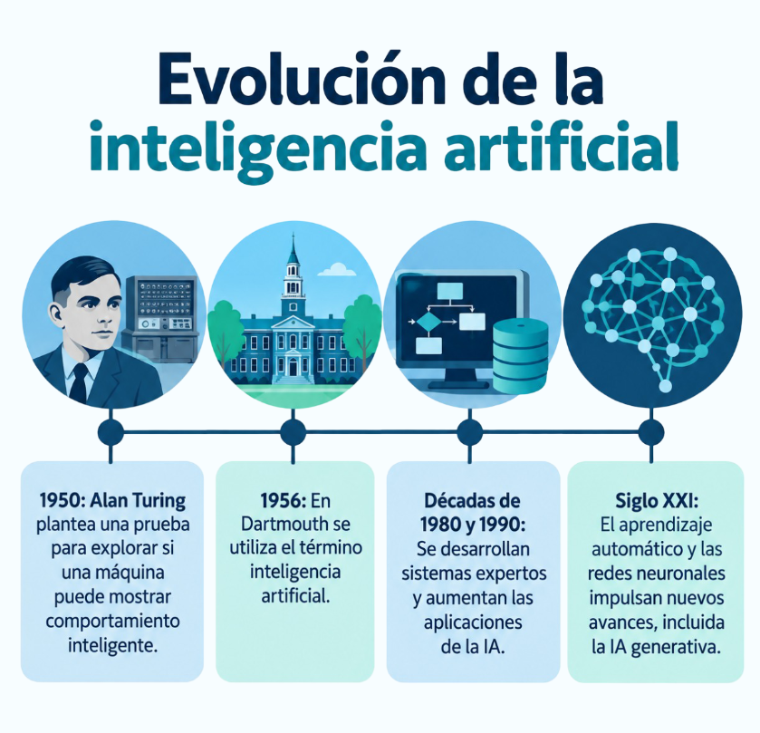
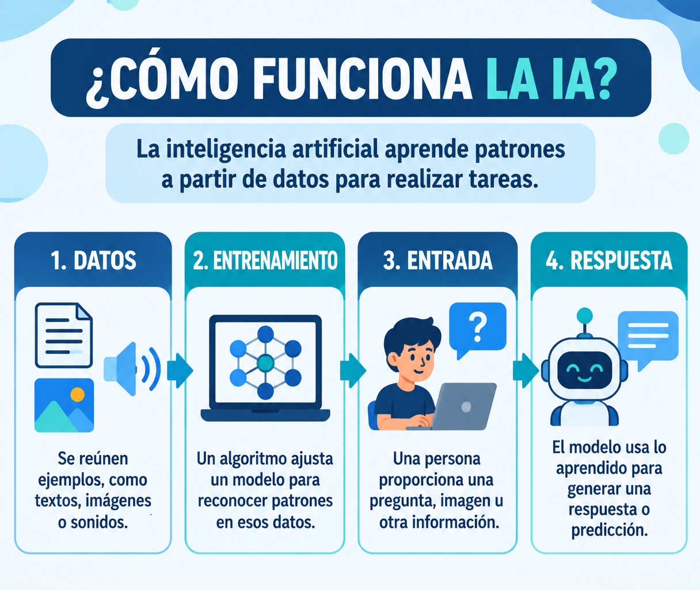
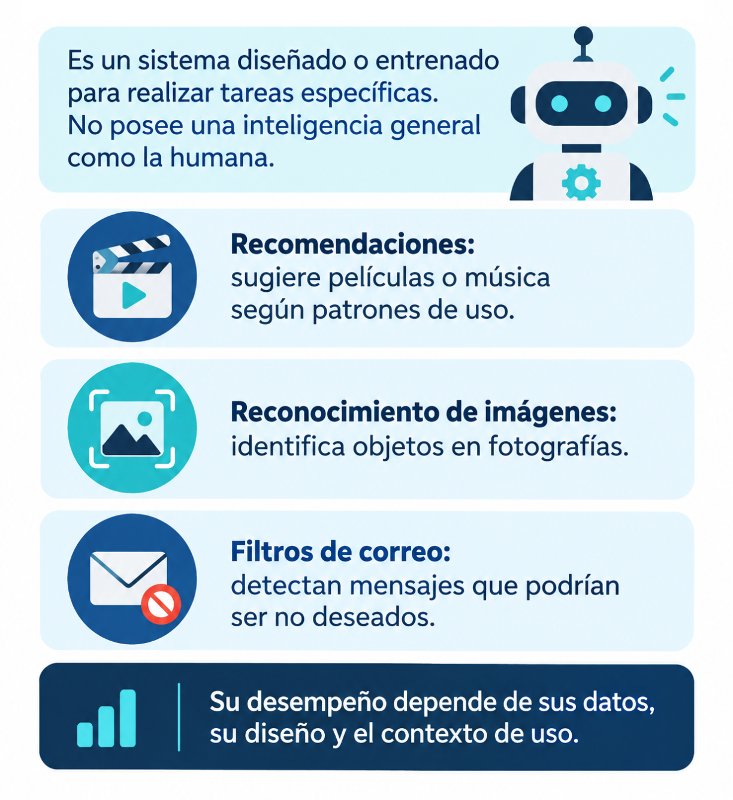
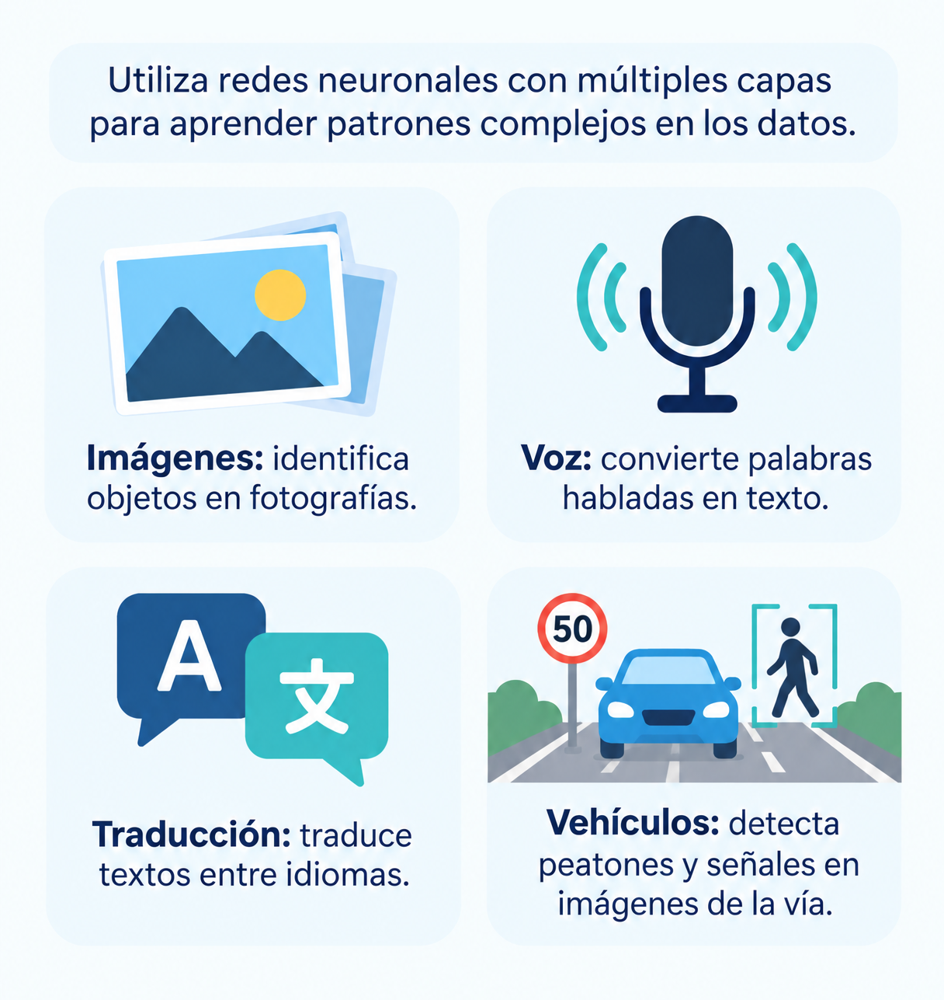
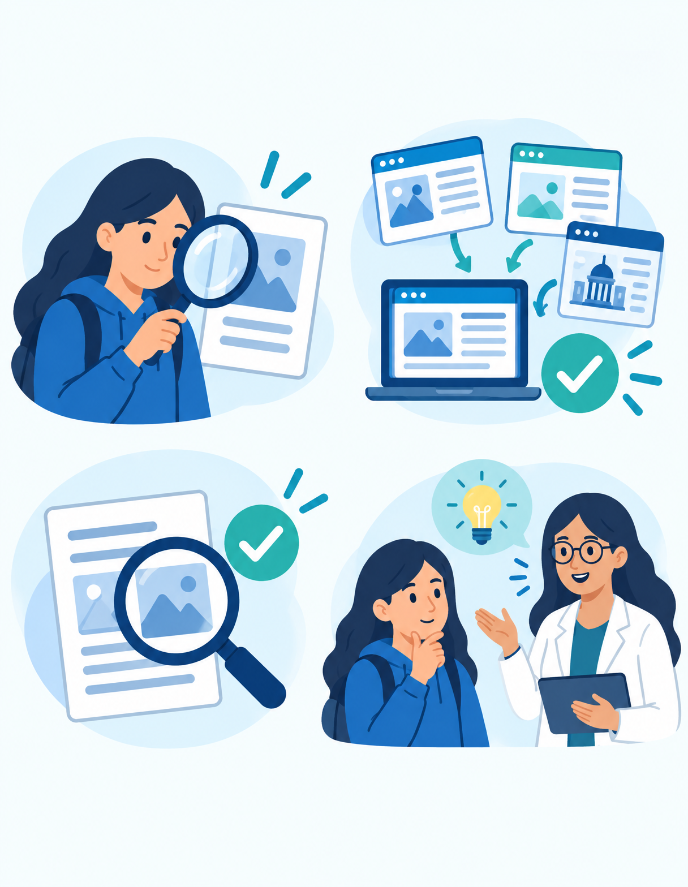
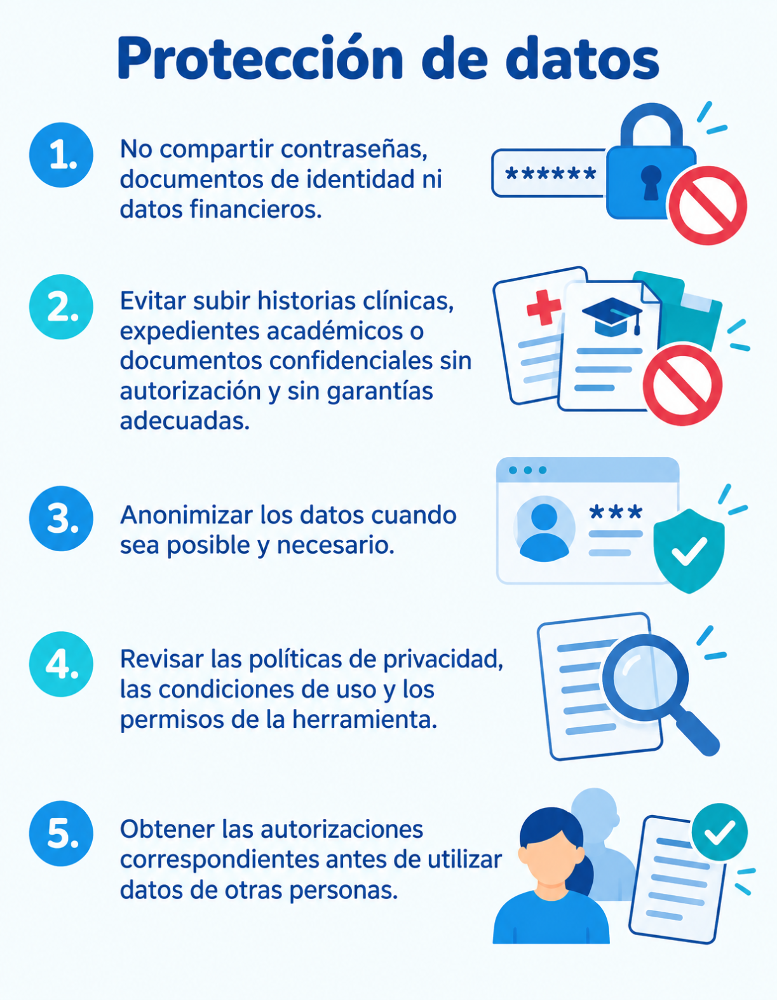
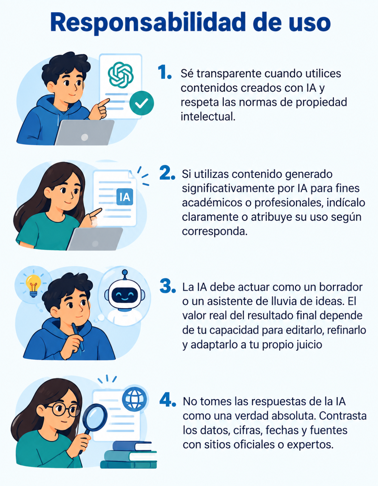

Laura Balentina Amado Valencia - Jhoan Ricardo Avila Gutierrez
Especialización en Inteligencia Artificial, Universidad de Cundinamarca.
¡Bienvenido! En este espacio de aprendizaje divido en cuatro modulos exploraras de manera interactiva por los fundamentos de la IA, sus principales ramas, el impacto cotidiano en la vida y su uso responsable.
La inteligencia artificial permite que las máquinas realicen tareas que normalmente requieren habilidades humanas, como aprender, adaptarse a nuevas situaciones o apoyar la toma de decisiones (Wang & Liu, 2025).
Para lograrlo, estos sistemas analizan grandes cantidades de información y buscan patrones que les ayuden a responder preguntas, hacer predicciones o resolver problemas en distintos contextos (Cimino et al., 2025).
Gracias a ello, la IA forma parte de herramientas que usamos con frecuencia, como los asistentes virtuales, los sistemas de recomendación y las aplicaciones que generan o organizan información (Schicchi & Taibi, 2026). Además, los avances recientes en inteligencia artificial generativa han permitido desarrollar tecnologías capaces de crear contenido nuevo, como textos, imágenes o audio, a partir de los datos con los que han sido entrenadas (Ren & Khan, 2026).
A diferencia de los programas tradicionales, que funcionan siguiendo instrucciones previamente establecidas, los sistemas de IA pueden aprender de la información disponible y ajustar sus respuestas según la situación o la tarea que deban realizar (Jia et al., 2025).
La inteligencia artificial ha cambiado mucho con el paso del tiempo y, gracias a este avance, han surgido diferentes áreas como el aprendizaje automático, el procesamiento del lenguaje natural, la robótica y la visión por computador (Wang et al., 2026).
En sus inicios, muchos sistemas funcionaban siguiendo reglas e instrucciones previamente definidas para resolver tareas específicas (Tadimalla, 2025). Con el desarrollo de nuevas tecnologías y el acceso a grandes cantidades de datos, comenzaron a aparecer modelos capaces de aprender patrones y mejorar su desempeño a partir de la experiencia (Cimino et al., 2025).
Más recientemente, la inteligencia artificial generativa ha ampliado las capacidades de estos sistemas al permitir la creación de contenido como textos, imágenes o audio de forma automática (Ren & Khan, 2026).
Gracias a estos avances, la IA se ha incorporado cada vez más en contextos educativos, profesionales y en actividades cotidianas (Sergeeva et al., 2025).

El funcionamiento de la inteligencia artificial puede entenderse como un proceso en el que los sistemas reciben información, la analizan y la utilizan para generar respuestas o apoyar la toma de decisiones.
Para lograrlo, emplean modelos capaces de aprender a partir de los datos, identificar patrones y adaptar su comportamiento según la información disponible (Cimino et al., 2025; Wang & Liu, 2025). Como resultado de este procesamiento, la IA puede realizar recomendaciones, clasificar información, generar contenido o elaborar predicciones para diferentes tipos de tareas (Schicchi & Taibi, 2026).
Además, estos sistemas pueden mejorar progresivamente su desempeño mediante la evaluación de los resultados obtenidos y la incorporación de nueva información, lo que les permite ofrecer respuestas cada vez más precisas y ajustadas a las necesidades de los usuarios (Wang & Liu, 2025).

La inteligencia artificial que utilizamos actualmente está diseñada para cumplir tareas específicas, como generar texto, traducir información, recomendar contenido o apoyar procesos de aprendizaje. Por esta razón, se habla de una IA especializada, ya que cada sistema se desarrolla para resolver problemas concretos dentro de un contexto determinado y no para actuar como una inteligencia capaz de realizar cualquier actividad humana (Tadimalla, 2025; Cimino et al., 2025; Schicchi & Taibi, 2026).
Además, estas herramientas tienen la capacidad de analizar grandes cantidades de datos, identificar patrones y generar respuestas o contenido en distintos formatos, lo que ha favorecido su uso en ámbitos educativos, profesionales y cotidianos (Schicchi & Taibi, 2026). Sin embargo, es importante reconocer que sus resultados no siempre son completamente precisos, ya que pueden presentar errores o generar información poco confiable.
Por ello, es necesario revisar críticamente las respuestas que producen y comprender que su desempeño depende tanto de los datos con los que fueron entrenadas como de los modelos que utilizan para procesar la información (Schicchi & Taibi, 2026; Wang & Liu, 2025).

¡Pon a prueba lo aprendido!
Identificar la diferencia entre un sistema de inteligencia artificial y un programa que funciona mediante reglas fijas.
Relaciona conceptos con sus definiciones por medio de tarjetas.
La inteligencia artificial está formada por diferentes áreas que trabajan juntas para hacer posibles muchas de las herramientas que usamos hoy en día.
Gracias a estas áreas, la inteligencia artificial está presente en muchas aplicaciones que forman parte de nuestra vida diaria y de diferentes entornos educativos y profesionales (Sergeeva et al., 2025).
El Machine Learning o aprendizaje automático es una de las áreas más utilizadas dentro de la inteligencia artificial, ya que permite que los sistemas aprendan a partir de los datos e identifiquen patrones que les ayudan a resolver problemas y tomar decisiones (Cimino et al., 2025).
Para ello, los modelos pasan por un proceso de entrenamiento en el que analizan información y aprenden de ella, para luego ser evaluados y comprobar qué tan bien funcionan en diferentes situaciones (Wang & Liu, 2025).
Dependiendo del tipo de datos disponibles, el aprendizaje puede ser supervisado, cuando el sistema aprende mediante ejemplos con respuestas conocidas, o no supervisado, cuando debe encontrar relaciones y patrones por sí mismo (Tadimalla, 2025).
Gracias a estas capacidades, el Machine Learning se utiliza en aplicaciones cotidianas como la detección de correos no deseados, los sistemas de recomendación y la realización de predicciones basadas en datos (Cimino et al., 2025; Schicchi & Taibi, 2026).

Cuando usamos una herramienta de inteligencia artificial, realmente están ocurriendo varias cosas detrás de pantalla. Todo empieza con la información que recibe el sistema, ya sea texto, imágenes, audio u otros tipos de datos. A partir de esa información, los modelos analizan los datos, identifican patrones y utilizan lo que han aprendido para realizar diferentes tareas o ayudar en la toma de decisiones (Cimino et al., 2025; Wang et al., 2026).
Después de este proceso, la IA puede generar respuestas, hacer recomendaciones, ofrecer ayuda personalizada o incluso crear contenido nuevo, como textos, imágenes o música, dependiendo de la herramienta que se esté utilizando (Sergeeva et al., 2025; Schicchi & Taibi, 2026).
Lo interesante es que estos sistemas pueden mejorar con el tiempo, ya que se ajustan a partir de nuevos datos y de la evaluación de los resultados que generan.
Gracias a esto, pueden ofrecer respuestas cada vez más precisas y adaptarse mejor a las necesidades de las personas que los utilizan (Wang & Liu, 2025; Wang et al., 2026).
| Concepto | Inteligencia Artificial | Machine Learning | Deep Learning |
|---|---|---|---|
| ¿Qué es? | Disciplina que busca crear sistemas capaces de realizar tareas que normalmente requieren inteligencia humana. | Rama de la IA que permite que los sistemas aprendan a partir de datos. | Rama del Machine Learning basada en redes neuronales artificiales profundas. |
| Objetivo principal | Simular capacidades humanas como razonar, aprender y tomar decisiones. | Aprender patrones para realizar predicciones o clasificaciones. | Aprender automáticamente patrones complejos en grandes volúmenes de datos. |
| Forma de aprendizaje | Puede utilizar reglas, lógica o aprendizaje automático. | Aprende mediante algoritmos entrenados con datos. | Aprende mediante múltiples capas de redes neuronales. |
| Intervención humana | Alta en sistemas basados en reglas. | Requiere selección y preparación de características. | Menor, ya que identifica características automáticamente. |
La inteligencia artificial está presente en muchas de las herramientas que usamos a diario, aunque a veces no nos demos cuenta. Por ejemplo, cuando una plataforma nos recomienda una canción, una película o un video según nuestros gustos, está utilizando sistemas capaces de analizar información y adaptar sus sugerencias a cada usuario.
También encontramos IA en los asistentes virtuales que responden preguntas, ayudan a buscar información o facilitan distintas tareas cotidianas (Wang et al., 2026).
Otra aplicación muy común es el reconocimiento de voz e imágenes, que permite a los dispositivos interpretar lo que decimos o identificar objetos y elementos presentes en fotografías y videos.
De igual forma, las herramientas de traducción automática facilitan la comunicación entre personas que hablan diferentes idiomas.
En el ámbito educativo, la IA también ha ganado importancia gracias a plataformas que ofrecen experiencias de aprendizaje personalizadas, adaptan los contenidos a las necesidades de cada estudiante y proporcionan retroalimentación más inmediata para apoyar el proceso de aprendizaje (Cimino et al., 2025; Wang et al., 2026).
En conjunto, estas aplicaciones muestran cómo la inteligencia artificial se ha convertido en una tecnología cada vez más cercana y útil en diferentes aspectos de nuestra vida diaria (Sergeeva et al., 2025).
Seguramente ya has usado alguna herramienta de inteligencia artificial generativa sin darte cuenta. Estas aplicaciones están diseñadas para crear contenido nuevo a partir de las instrucciones que les damos.
Por ejemplo, los asistentes conversacionales pueden responder preguntas, explicar temas o ayudarte a resolver dudas en una conversación, de forma muy parecida a como lo haría una persona. (Schicchi & Taibi, 2026).
Otra de sus funciones más conocidas es la generación de textos, ya que pueden redactar resúmenes, correos, informes o ideas para diferentes actividades.
También existen herramientas capaces de crear imágenes a partir de una descripción escrita, lo que facilita la elaboración de recursos visuales para trabajos, presentaciones o proyectos. (Schicchi & Taibi, 2026; Ren & Khan, 2026).
La inteligencia artificial puede ser una gran ayuda para estudiar, buscar información o aclarar dudas, pero no debería convertirse en un reemplazo de nuestro propio aprendizaje.
Lo ideal es aprovechar estas herramientas para entender mejor los temas, generar ideas o complementar el estudio, sin dejar de analizar, investigar y construir nuestras propias respuestas (Schicchi & Taibi, 2026).
También es importante ser cuidadosos con la información que compartimos. Cuando utilizamos herramientas de IA, debemos evitar ingresar datos personales, contraseñas o cualquier información privada que pueda poner en riesgo nuestra seguridad digital (Wang & Liu, 2025).
Por otro lado, aunque la IA puede ofrecer respuestas rápidas y útiles, no siempre acierta. En ocasiones puede proporcionar información incompleta, desactualizada o incluso incorrecta. Por eso, es buena práctica revisar lo que genera, compararlo con fuentes confiables y usar el pensamiento crítico antes de dar cualquier respuesta por válida (Schicchi & Taibi, 2026; Wang & Liu, 2025).
Ya con modelos de lenguaje que redactan respuestas con una seguridad casi humana, el riesgo de que la IA se equivoque es real. Y más peligroso es asimilar y aceptar información falsa sin cuestionarla. Estrategias para validar la información generada por IA:

| Pregunta | Respuesta plausible | Respuesta verificada |
|---|---|---|
| ¿Quién compuso la banda sonora de la película de ciencia ficción que se estrenó el mes pasado? | La banda sonora fue compuesta por Hans Zimmer, quien utilizó sintetizadores de los años 80 para darle un toque futurista. | Revisando los créditos oficiales en IMDb, la música de esa película fue compuesta por Ludwig Göransson; Hans Zimmer no participó en este proyecto. |
| ¿En qué año se fundó la biblioteca más antigua de mi ciudad y quién lo hizo? | Fue fundada en 1845 por el ilustre educador Manuel Silva para promover la lectura tras la independencia. | De acuerdo con el archivo histórico digital de la red de bibliotecas públicas, se fundó el 20 de febrero de 1777 por orden del Virrey Manuel de Guirior. |
| ¿Cuál ha sido históricamente la temperatura máxima promedio en Bogotá durante el mes de octubre? | En octubre, Bogotá suele tener días templados con una temperatura máxima promedio de unos 22°C a 24°C, debido a que es una época de transición de lluvias. | Según los registros históricos de la estación del Aeropuerto El Dorado recopilados por la NOAA, la temperatura máxima promedio real en octubre es de 19.49°C. |


Instrucciones: Lee el enunciado de cada pregunta e indique cual es la respuesta correcta (única respuesta). Si existen dudas, cada pregunta brinda una pista como ayuda. No hay tiempo o un límite de intentos.